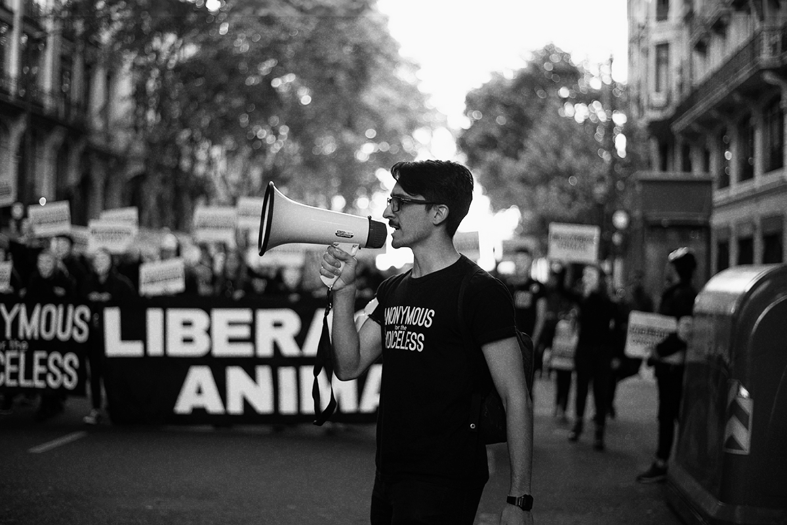

Translation English to Spanish #1
Translation from English to Spanish with captions being added one word at a time in the sentence for dynamic content.
Contact Me at guimillucas7@gmail.com
Making content accessible for spanish and English speakers worldwide on social media.
Animal rights activism related projects for social media.
Translation from English to Spanish with captions being added one word at a time in the sentence for dynamic content.
This project uses a different approach to translation with full sentence translations for better understanding and accuracy.
Spanish video with full sentences captions and translation to English.
Spanish video with full sentences captions and translation to English.
More projects can be found at Av's Buenos Aires Instagram.
My name is Lucas and I am a video editor and translator specializing in creating accessible content for Spanish and English speakers. I am an animal rights activist and use my skills to help spread awareness through social media.
